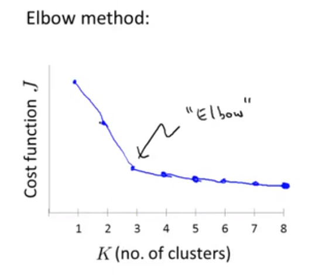

K-means 思路
K-mean 是我接触到的第一个非监督学习算法，K-mean算法的思路想法是这样的，在我们获取到的所有Unmark点的空间中选取几个分类点，这些点的位置是我们随机产生的，我们把它们叫做聚类中心，我们将其分为两个类C1,C2叙述，我们打算把这批数据分类为两个分类，K-mean是一个迭代方法，他要做的是两个事情，1.簇分配；2.移动聚类中心。迭代所有数据点，计算数据点到两个聚类中心的距离，根据数据点到聚类中心的距离将其分配到C1,C2聚类中，簇分类的操作已经完成，还需要做的就是将聚类中心移动到刚才分配所得到的数据点中心去，具体做法就是计算单个聚类中所有数据点的均值，将聚类中心放置于均值点的位置。两个步骤完成，接下来就是反复循环上面的步骤再次执行检测分类。直到分类不再改变，最终就会找到两个簇
K-means 算法
输入：
- K -> 我们想要达到目的分为多少个类别
- Train Set -> 没有标签的数据集{x1,x2,x3,…xm}
下列是借鉴的Andrew Ng老师机器学习的板书
Randomly initialize K cluster centroids u1,u2,u3...uk
Repeat{
for i = 1 to m:
c(i) := 离x(i)点最近的聚类中心分类 min||x(i) - u(k)||^2
for k = 1 to K:
u(k) := 分配给集群簇的点的平均
# 例如：分配给C2的点为x(1),x(3),x(6),x(10)，计算u(2) = 1/4[x(1)+x(3)+x(6)+x(10)]
}分类计算分配的点，如果发现有聚类中心u没有被分配点，可以选择删除聚类中心，但是会减少分类。
K-mean Optimization Objective
K-mean 的优化目标最小化代价函数,最小化目标代价函数，最小化每个分类点到聚类中心的距离的平均

K-mean Random initialization
良好的初始化方法将会给模型带来一个好的分类，如何初始化聚合中心将会决定你获得到的结果好坏，不至于模型在数据集上坏掉
那么如何初始化模型的聚合中心，才能获得更好的模型，而且跳出局部最优
多次执行K-mean的方法
FOR i = 1 to 100{
Randomly initialize K-means.
Run K-means .Get c(1),...c(m),u(1),...u(K) 执行K-means 获得结果及聚类
计算成本函数Function(distortion)
J(c(1)...c(m),u1,...uK)
}
经过100次的计算我们获得了100中分类结果聚类数据，从中选取最优的，畸变值最低的cluster
K-means 如何选择参数K
肘部方法
通过从小改变K的值，对数据集做K-means，计算成本函数值。通过绘制K值与成本函数J的值的图像，观察成本函数下降趋势，转折肘部为佳选。

肘部方法在某些成本函数下降平缓的情况下，无法作用
从使用及商业角度考量
从目的和商业角度考量K值应该取多少合适